01
Checking the tool before running it
I downloaded WiFiInfoView to inspect nearby wireless-network metadata. It did not work in my virtual machines because they did not have direct access to a compatible Wi-Fi interface, and Windows location access was required before the physical system would expose scan results.
Before launching the executable, I submitted it to VirusTotal. Two of 72 security engines flagged the file. The remaining results and detection details made those two alerts look like likely false positives, but that is not the same as proving a file safe. The result should be combined with the download source, file hash, signature information, and local behavior.

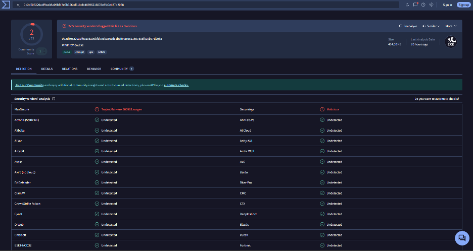
02
What a passive Wi-Fi survey reveals
Once the tool ran, many of the SSIDs were familiar because I regularly work with ESP32 and Raspberry Pi devices. WiFiInfoView organized information I had previously encountered while inspecting my own Wi-Fi captures in Wireshark: signal strength, channel, PHY type, security policy, cipher, advertised speed, channel width, vendor, and router-identifying fields.

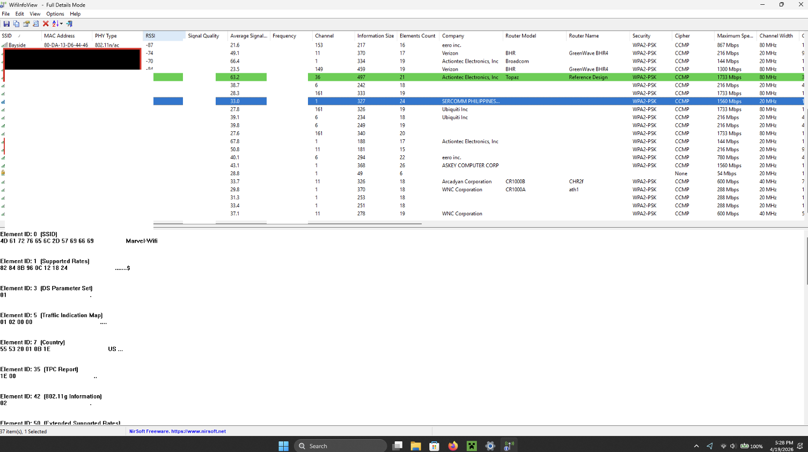
An SSID may be absent because the access point is out of range, powered down, operating on a band the adapter is not scanning, or configured not to broadcast its network name. Hiding the SSID does not provide meaningful security by itself: the access point’s BSSID and other management traffic remain observable, and the network name can often be inferred when clients connect. WPA2 or WPA3 authentication and a strong unique passphrase are the actual access controls.
The channel list also showed many networks sharing the same spectrum. On 2.4 GHz, channels 1, 6, and 11 are commonly used as non-overlapping 20 MHz choices. Multiple networks on the same channel contend for airtime; networks on partially overlapping channels can also interfere with one another.

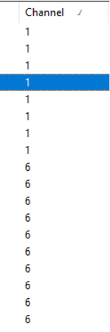
Most observed networks advertised WPA2-PSK with CCMP, the AES-based protection used by WPA2. The survey also included an older WPA network and a WPA3-Personal network. Vendor and model fields can help an administrator inventory equipment and check relevant advisories, but they can also help an attacker narrow reconnaissance to a particular device family.
03
Wireless settings in the router emulator
For the configuration portion, I opened the TRENDnet TEW-818DRU emulator. Its dashboard separated wireless, guest-network, parental-control, and status functions into a compact navigation panel.

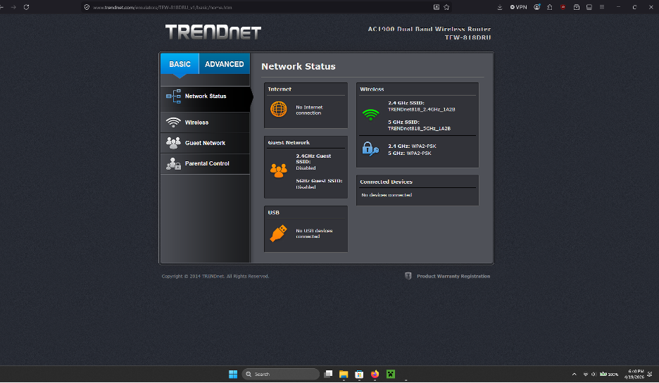
The wireless page allowed the SSID broadcast, channel selection, and channel width to be changed. Disabling SSID broadcast only hides the name from ordinary discovery lists; it should not be treated as an access-control feature.

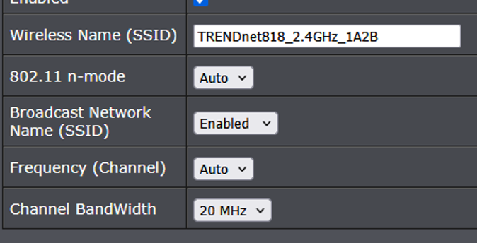

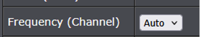

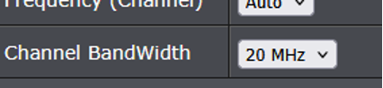
Automatic channel selection can reduce manual work, although consumer routers vary in how often they reevaluate congestion. A wider 40 MHz channel can increase peak throughput, but it consumes more spectrum and can increase interference in a crowded 2.4 GHz environment. It does not inherently extend range; a narrower 20 MHz channel is often the more stable and considerate choice when many nearby networks are present.
04
Security policy and passphrase handling
The emulator was configured for WPA2-PSK with AES/CCMP. That is stronger than legacy WPA or TKIP-only operation. Mixed WPA/WPA2 or TKIP compatibility modes may permit older, weaker options and should be avoided unless a documented legacy requirement makes them necessary.

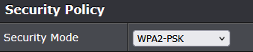

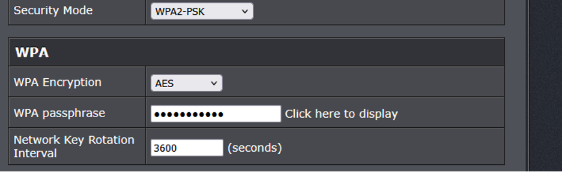
A secure Wi-Fi passphrase should be long, random, unique, and changed from any vendor default. Adding symbols can expand the character set, but length and unpredictability matter more than satisfying a simple complexity pattern. “Salting” is not a separate option the router owner adds to the passphrase; WPA2’s key derivation already incorporates the SSID. The plaintext passphrase shown in one supplied capture is therefore excluded from this public note.
05
Guest-network segmentation
A guest network can separate visitor devices from the private LAN, but the result depends on the options selected. In the emulator, Internet Access Only was checked, which is intended to prevent guests from accessing the private LAN. Wireless Client Isolation was not checked, so guest devices could potentially communicate with one another.

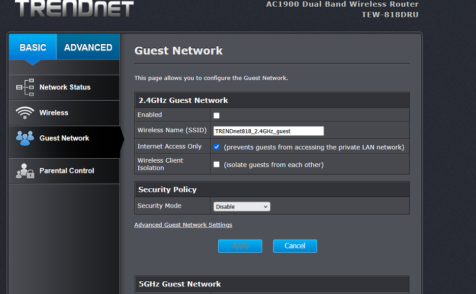


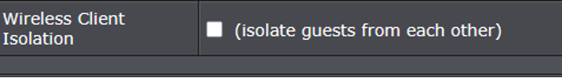

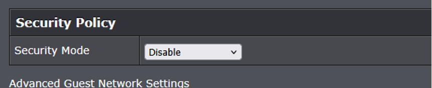
If the guest SSID were enabled, leaving its security mode disabled would create an open network. Ease of connection is not worth removing encryption; a separate WPA2 or WPA3 guest passphrase can preserve segmentation without exposing guest traffic as an open WLAN. A guest network is not automatically a honeynet—turning one into an observation environment would require deliberate isolation, authorization, monitoring, and careful data handling.
06
LAN client filtering
The access-control page offered rules based on LAN IP ranges, protocol, destination-port ranges, schedules, and an enabled flag. This can restrict selected traffic from configured clients, but it is not a substitute for strong wireless authentication, guest isolation, firmware maintenance, or a properly designed firewall policy.

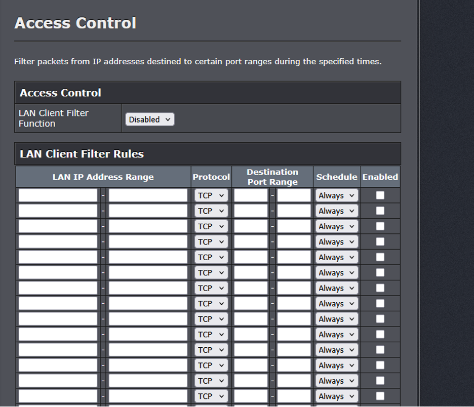
07
Takeaway
The survey showed how much operational information ordinary Wi-Fi management traffic makes visible without joining a network. The router emulator then showed the defensive side of those same observations: channel planning, modern encryption, unique passphrases, LAN separation, guest-to-guest isolation, and targeted filtering all influence the actual security posture.
The interface was easy to navigate for someone familiar with networking, but it offered little guidance about why one option was safer than another. A clearer consumer interface would explain the security consequence of hiding an SSID, using legacy encryption, disabling guest authentication, or leaving client isolation off—not merely expose the controls.